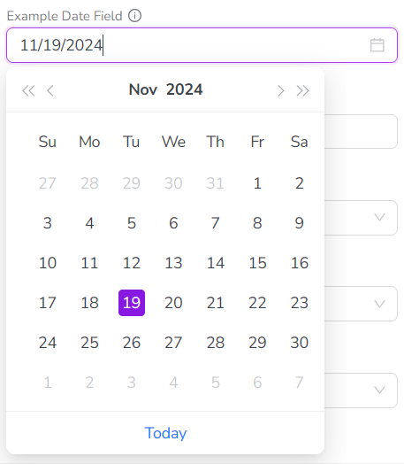
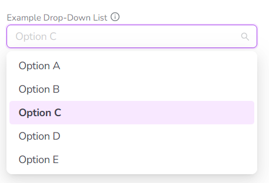
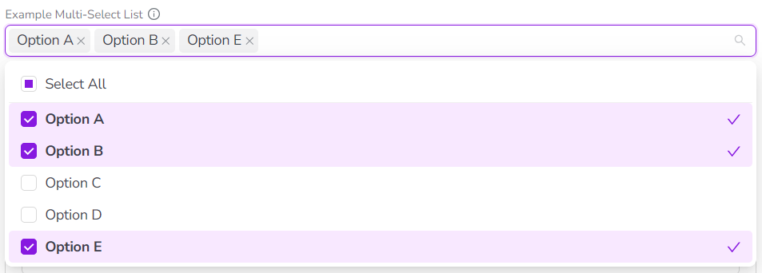
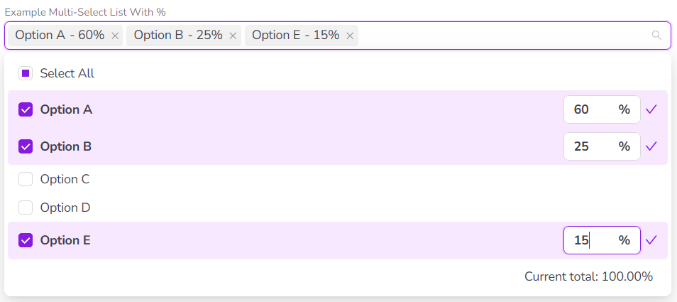
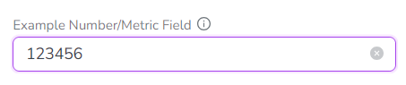
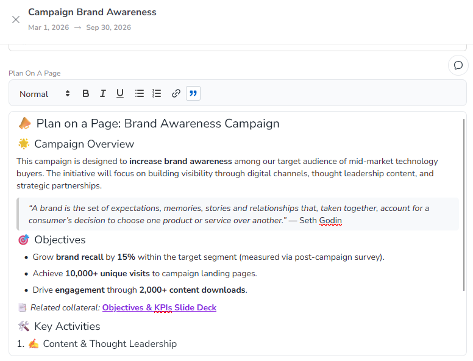
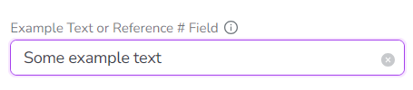

Activity attribute configuration overview
As an administrator, you can create custom attributes and attach them to activity type groups and activity types.
When users create or edit activities in Campaign Management, the activities display the attached attributes (according to their activity type) for data entry.
Custom attribute types
When you create a custom attribute, you start by selecting the attribute's type. The type determines what kind of data value the attribute field will accept and store (such as numbers, text, dates, etc.).
Each attribute type is also associated with a specific user interface (UI) element. Users use this UI element to set a value for the attribute when they create or edit an activity.
Uptempo Campaign Management supports a variety of custom attribute types for different kinds of data:
Type | Description | Example |
|---|---|---|
Date | Calendar-style selector for date values. | Start or End Date |
Drop-Down List | Predefined list of options where a single option can be selected. | Regions |
Multi-Select List | Predefined list of options where multiple options can be selected. Optionally, attribution percentages can be assigned to each selected value. | Marketing Objectives |
Number or Metric | Single-line text field for (non-currency) numeric values. | Expected Impressions |
Rich Text | Large text field for formatted text, with a WYSIWYG editor. | Plan on a Page |
Text or Reference # | Single-line text field that accepts letters, numbers, and symbols. | Description |
Date
Data Type: Single date values in the format MM/DD/YYYY.
UI Element: Date picker that displays a calendar. Users can click on a date in the calendar to set the date value, or enter it manually into the input field.

Drop-Down List
Data Type: Predefined options.
UI Element: Drop-down type menu that displays a list of predefined options. Users can click on a single option in the list to select it. Users can also type a keyword into the field to filter the options list.

Multi-Select List
Data Type: Predefined options, optionally with user-customizable percentages.
UI Element: Drop-down type menu that displays a list of predefined options. Users can click on one or multiple options in the list to select them, or click Select All to quickly select all options. Users can also type a keyword into the field to filter the options list.

Optionally, you can configure this attribute type so that users can also enter a percentage value for each selected option:

Number or Metric
Data Type: Numeric values.
UI Element: Input field that accepts values containing only numeric characters (0-9). Values that include non-numeric characters are rejected.

Rich Text
Data Type: Formatted rich text (including emoji and other special character sets).
UI Element: Large text input field with a visual formatting control bar (WYSIWYG editor). Supported formatting options:
Text styles
Normal (paragraph)
Headings (h1 - h3)
Hyperlink (clickable)
Blockquote
Text formatting
Bold
Italic
Underline
List styles
Bullet
Numbered

Text or Reference#
Data Type: Alphanumeric values.
UI Element: Input field that accepts values containing any combination of letter characters, number characters, and special characters.


Attribute behavior
Inheritance
In the activity hierarchy, activities inherit all attributes of all ancestor activities, along with their attribute values. To avoid inconsistencies due to multiple defined values for an attribute, an attribute can only be used once in a branch of the activity hierarchy. This means that you can't create an activity rule where a child activity has the same attribute as a parent activity.
Dependencies
If two Drop-Down List or Multi-Select List attributes are logically related, you can create an attribute dependency to link them. In an attribute dependency, the value selected for the first attribute (the controlling attribute) determines which values can be selected in the second attribute (the dependent attribute).
For more information, see Set up attribute dependencies.